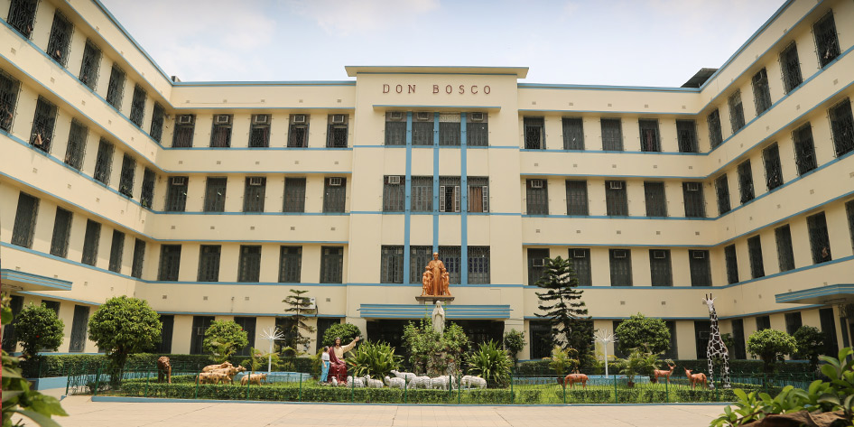
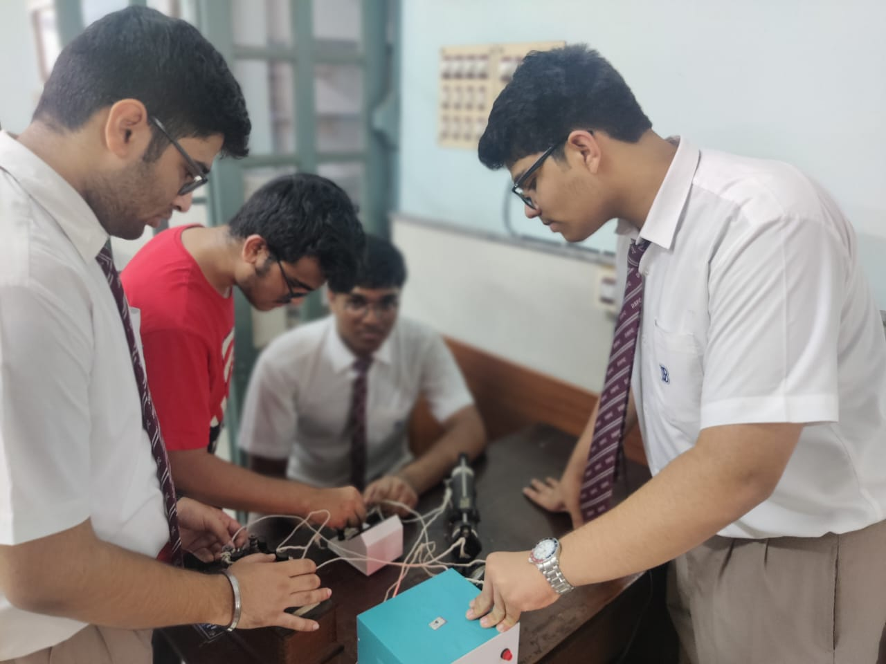
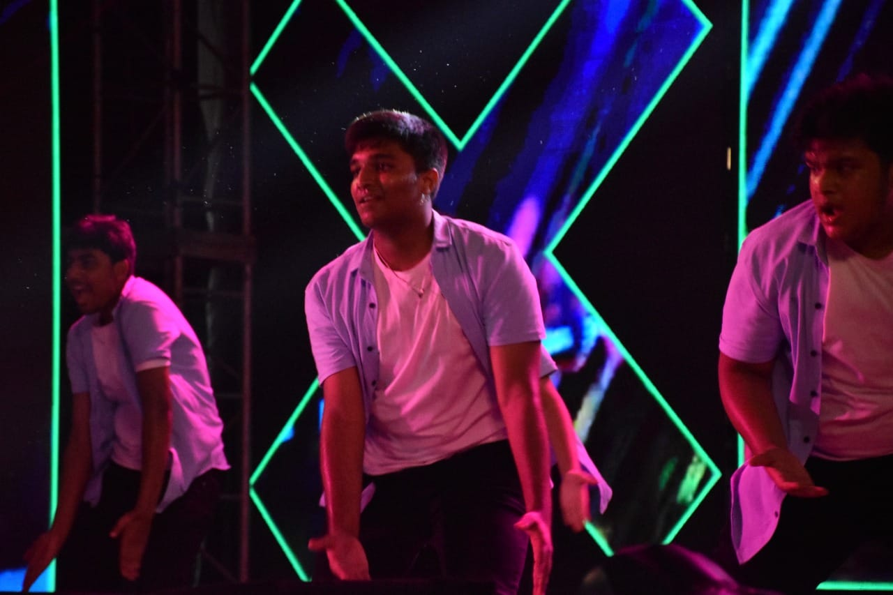
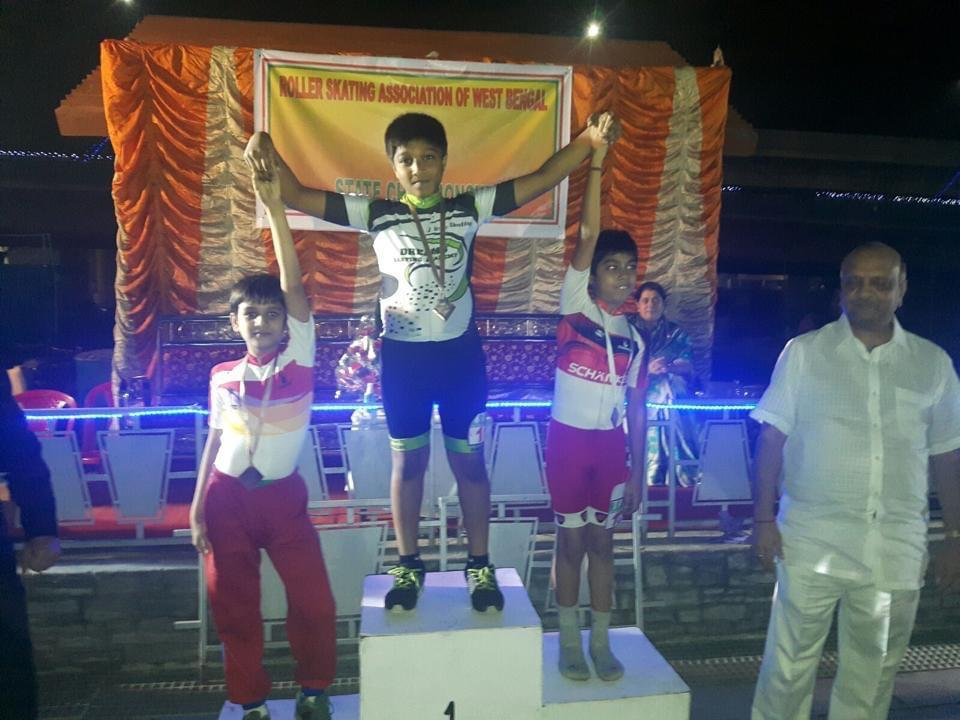
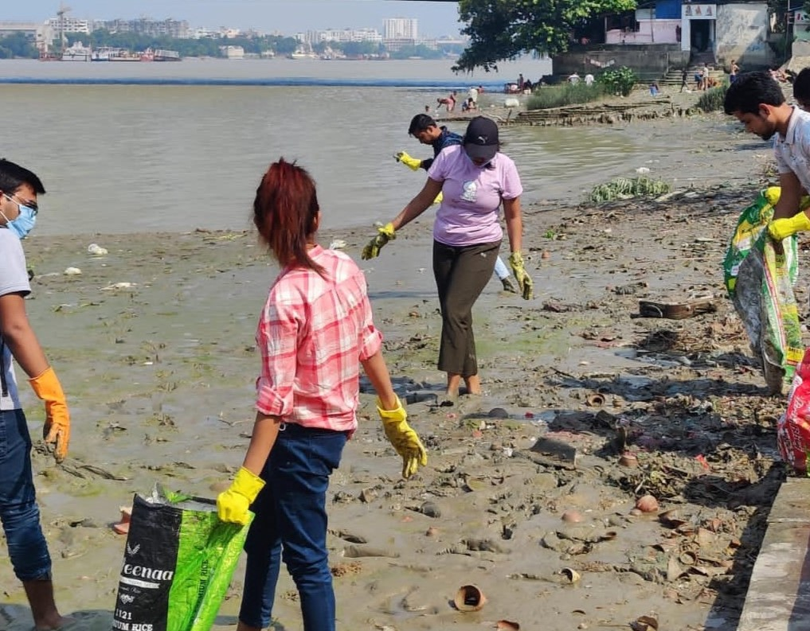
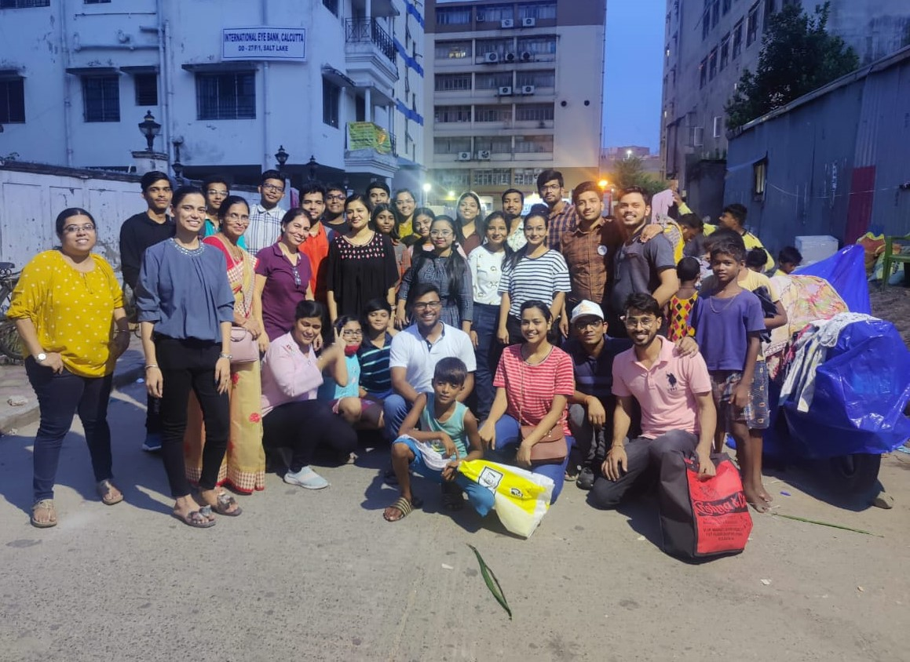

About Me
Hi, I am Divyansh Tulsyan, a teenager eager to explore the world and the wonders it has to offer. I am currently a class 12 student preparing for my final exams. I love to dance and play sports. I also love to explore new places and find the hidden meaning behind small things. I am a very happy and outgoing person. I have mentioned some of my achievements and works on this website.
Education
Don Bosco School Park Circus, Kolkata, India
- Indian School Certificate (Class XII): (yet to appear)
- Indian Certificate for School Examinations (Class X): 93.2%

Research & Interest Project
AI & Cybersecurity
- Wrote a report on how AI affects Cybersecurity threat prospects and the solutions it has.
Semiconductors
- Made a research project on semiconductor industry its manufacturing, advancement and future prospects.
Discord Bot
- Made a discord bot that plays rock, paper, scissors with the user and rolls a die.
TBD Healthcare
- Made a website as part of a group project that aimed at assisting people who do not get proper treatment.
- Wrote blogs on mental health.

Internships
Devansh Creations-Intern
- Managed social media account and helped in the creation of their company website.
Leadership & Co-curricular Activities
Interim Council
- Organised 15+ inter and intra school competitions, ensuring active participation by the students of the school.
- Initiated school volunteer work projects such as the Teacher's Day, Children's Day, Workers day, Farewell for batch 2022 and
Christmas fete for the underprivileged.
School Dance Team-Captain
- Won 15+ inter-school dance competitions, representing the school.
- Choreographed and performed routines for school events such as Students Talent Contest, Students Inter-house fest,
Teachers Day, Christmas fete, workers day, farewell, etc.
- Managed the dance team, coordinating weekly practices, ensuring fitness and training sessions.

Fine Arts, Ankur Arts Centre (State Exams)
- Passed 7 years of state fine art examinations with a Distinction by Ankur Arts Centre.
- Artwork featured in the annual school magazine, receiving appreciation from teachers and students.
Skating (State & National Level)
- Silver in 500m race in 2015.
- Gold in time trial, Gold in road race, Silver in 500m race in 2016 state championship, West Bengal. Selected for Nationals
2016 and participated.
- Declared as the best skater (state) in his age group in 2016.
School carrom team
- Part of the carrom team and took part in many events.
School Badminton team-Captain
- Captain of the school badminton team and took part in many events including the annual state competition.

Community Service
Bhumi-Volunteer
- Taught dance on a weekly basis to the underprivileged at shelter homes online through zoom, helping them get acquainted
with the performing art form.
- Organized events for the NGO like competitions, annual exams, and clothes drive.
- Volunteered in many social and welfare services such as plantation drives, clothes donation drive, etc.
- Headed the clothes donation drive in my locality.

Jhalda Seva Social Welfare Organization-Volunteer
- Initiated donation drives to collect funds for food for farmers in rural India.
Shyam Prem Mandal-Member
- Volunteered in several eye check-up camps and food donation drives.
Gangasagar Social Welfare Camp
- Distributed food among all people in need in a government camp.

Skills & Interests
Languages: English, Hindi, Bengali
Interests: Dance, Cricket, Football, Skating, Painting, Badminton, Basketball
Computer Languages: Java, Python, HTML